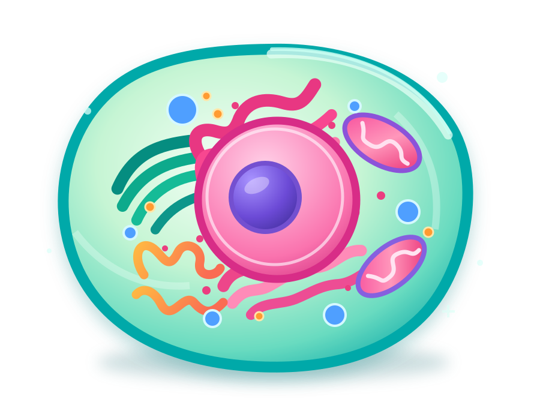
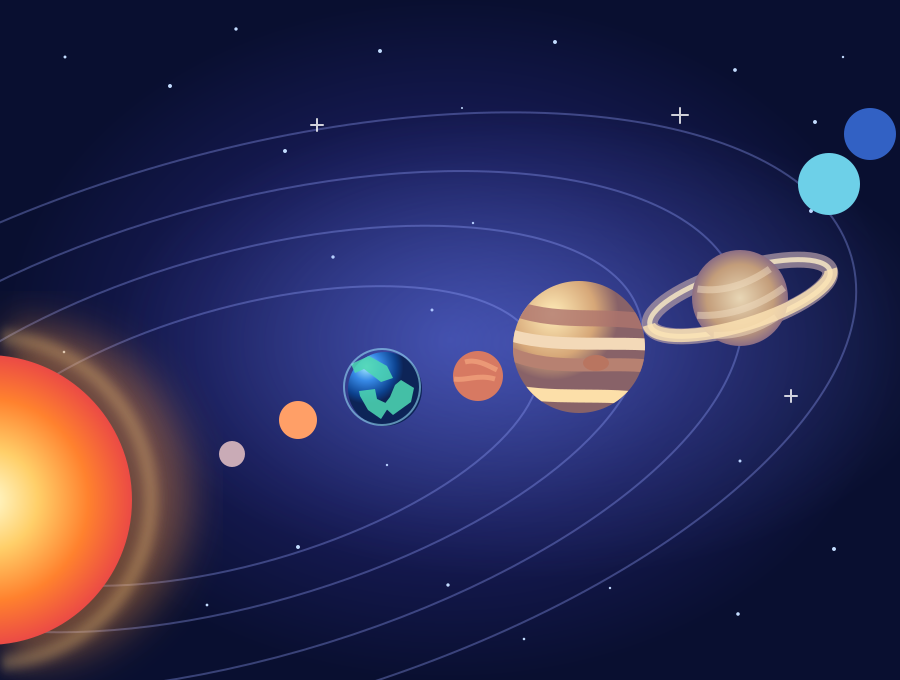

BIOLOGY LIFE SCIENCE LIVE
✳ THE MICROSCOPIC WORLD 01 / 02
Animal Cell Explorer
Take a closer look at life's building blocks. Tap organelles, discover their jobs, and watch cellular activity come alive.
Step inside the world of science. Explore incredible things, see how they work, and learn by doing — at your own pace.
For every age, every kind of learner.
Free to explore. No account needed.

Pick a subject, jump into an interactive experience, and follow your curiosity wherever it takes you.
Take a closer look at life's building blocks. Tap organelles, discover their jobs, and watch cellular activity come alive.

✦Journey from our neighborhood of planets into the wider galaxy. Explore celestial motion, orbits, and our place in space.
A note on scientific accuracy: these interactive models use stylized illustrations and simplified scales or motion to make scientific ideas easier to explore.
We're making room for new adventures.
Discover the forces behind our world.
Explore our living, changing planet.
See the science behind everyday things.
Find the patterns hiding everywhere.
Try another search or choose a different subject.
Sometimes the best way to understand something is to see it, touch it, and explore it for yourself.
Start with a subject that sparks your curiosity. There's no test and no pressure.
Explore animated models, select objects, and learn through interactive visuals.
Follow your questions, revisit discoveries, and come back whenever you like.
We all learn differently. CurioLab brings big ideas to life through visual, approachable, hands-on experiences — because exploring something should feel exciting, not intimidating.
An independent educational project created by Rodrigo Felga de Castro.
Find something amazing